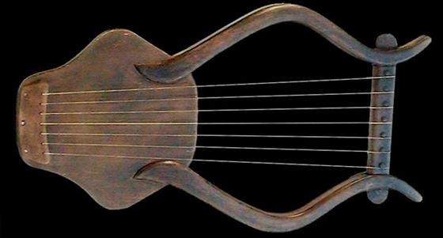
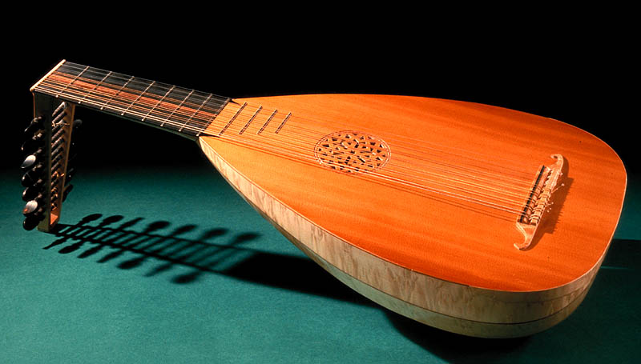

История гитары восходит к глубокой древности. Её колыбелью были страны Ближнего и Среднего Востока, где она появилась несколько тысячелетий назад. Но её появлению в традиционном виде предшествовал длинный путь развития. По мнению ряда исследователей, лук первобытного охотника мог использоваться не только как оружие, но и как музыкальный инструмент. Так, если на лук натянуть не одну тетиву, а несколько, то в силу их различной длины, силы натяжения и толщины изменяется высота издаваемого звука. Вероятно, именно такой вид имел музыкальный инструмент, ставший прототипом ассиро-вавилонской и египетской кифары. В свою очередь, древние кифары стали "предками" гитары.
На древнеегипетских пирамидах и ассирийских архитектурных памятниках встречаются иероглифы, изображающие инструмент наблу, по форме отдаленно напоминающие гитару. Интересно, что таким же иероглифом у древних египтян обозначались понятия "добро", "хорошо", "красиво".
В Месопотамии и Египте некоторые разновидности кифар (в том числе египетская набла и арабский эль-ауд) получили дальнейшее конструктивное развитие и распространились по всему средиземноморскому побережью уже в III - II тысячелетиях до новой эры. До сих пор в странах Малой Азии встречается музыкальный инструмент "кинира", родственный гитаре.
В Древней Греции самыми популярными музыкальными инструментами были китара (китарра), лира, арфа, пандора.
В первых веках новой эры в средиземноморских странах Европы была распространена латинская гитара, родственная греческой. Была известна и ближайшая родственница гитары - лютня. Само названия "лютня" происходит от арабского слова "эль-ауд", что означает "деревянный" или "благозвучный".
Есть предположение, что лютню и гитару занесли в Европу арабы - через завоёванную ими и VIII веке Испанию. Скорее всего, однако, эти инструменты распространились в Европе через Древнюю Грецию - благодаря её культурным связям со странами Ближнего и Среднего Востока.
До XVI века гитара была трех- и четырехструнной. Играли на ней пальцами и плектром (костяной и черепаховой пластинкой).
В XVI веке в Испании появилась пятиструнная гитара, и с этого времени она стала называться испанской гитарой. Струны ставились двойные, иногда первая струна ("певунья") была одинарной. Из всех европейских стран наибольшее распространение гитара получила в Испании, где она стала подлинно народным инструментом.
С появлением пятой струны и увеличением её художественно-исполнительских возможностей гитара начинает успешно конкурировать с лютней и виуэлой, своей предшественницей, и постепенно вытеснять их из музыкального обихода. Появляется целый ряд талантливейших виртуозов и композиторов, поднявших искусство игры на гитаре на очень высокий уровень. Среди них Ф. Корбетта (1620-1681), придворный гитарист королей Испании, Франции и Англии, его ученик Р. де Визе (1650-1725), придворный гитарист короля Франции Людовика XIV, Ф. Кампион (1686-1748), Г. Санз (1640-1710) и многие другие.
Начинают выходить первые табулатурные сборники и учебные пособия для гитары: "Книга гитары" Р. де Визе (1682), "Новые открытия гитары" Ф. Кампиона (1705) и многие другие. В них печатались старинные испанские танцы - пасскальи, чаконы, сарабанды, фолии и другие пьесы.
Во второй половине XVIII века появляется шестиструнная гитара (по утверждениям историков - опять в Испании). С появлением шестой струны и заменой двойных струн одинарными начинается триумфальное шествие гитары по странам и континентам; в таком виде существует до сих пор. Музыкальные возможности шестиструнной гитары оказались столь велики, что она становится одним из самых любимых инструментов.